A Revolução Estilosa da Franquia (2016)
Lançado em 2016 para PlayStation 3 e PlayStation 4, Persona 5 elevou a franquia ao estrelato global definitivo. Com uma das interfaces de usuário (UI) mais artísticas, dinâmicas e copiadas da história dos videogames, o título aborda uma forte crítica social sobre o abuso de poder, a opressão dos adultos e a busca dos jovens pela verdadeira liberdade.
A narrativa se passa na movimentada metrópole de Tóquio. O protagonista, sob liberdade condicional após ser falsamente acusado de agressão por um político influente, é enviado para morar no sótão de um café acanhado em Yongen-Jaya e estudar na Yongen Academy, carregando o estigma de ser um "criminoso" aos olhos da sociedade.
O Metaverso e os Palácios
Através de um misterioso aplicativo de celular que surge do nada, o protagonista e seus aliados ganham acesso ao Metaverso, uma dimensão paralela gerada pela cognição e pelos desejos subconscientes da humanidade. Lá, adultos corruptos que possuem desejos extremamente distorcidos manifestam massivas masmorras cognitivas chamadas Palácios (como castelos, museus ou bancos).
Para parar as atrocidades desses criminosos no mundo real, o grupo assume a identidade dos Phantom Thieves of Hearts. O objetivo deles é se infiltrar no coração do Palácio, desviar das armadilhas de segurança e roubar o Tesouro (a raiz dos desejos distorcidos do alvo). Isso força o vilão no mundo real a passar por uma intensa "Mudança de Coração" (Change of Heart), fazendo-o confessar publicamente todos os seus crimes espontaneamente.
Pilares do Jogo
Combate Velvet & Baton Pass
O combate por turnos nunca foi tão rápido e estiloso. Com mecânicas de Baton Pass expandidas, você pode passar o turno para um aliado após derrubar um inimigo, aumentando drasticamente o dano e criando combos devastadores.
Mementos: O Palácio do Povo
Além dos Palácios principais, os Phantom Thieves exploram os Mementos, uma masmorra gigantesca e gerada proceduralmente que representa o Palácio da cognição do público geral. É o lugar perfeito para cumprir pedidos de alvos menores enviados pelos fãs na internet.
Confidants (Confidentes)
O sistema de Social Links evoluiu para os Confidants. Fazer acordos e laços com moradores de Tóquio — desde uma médica clandestina até uma jornalista alcoólatra — agora libera habilidades cruciais de gameplay para usar dentro do Metaverso.
Os Phantom Thieves of Hearts
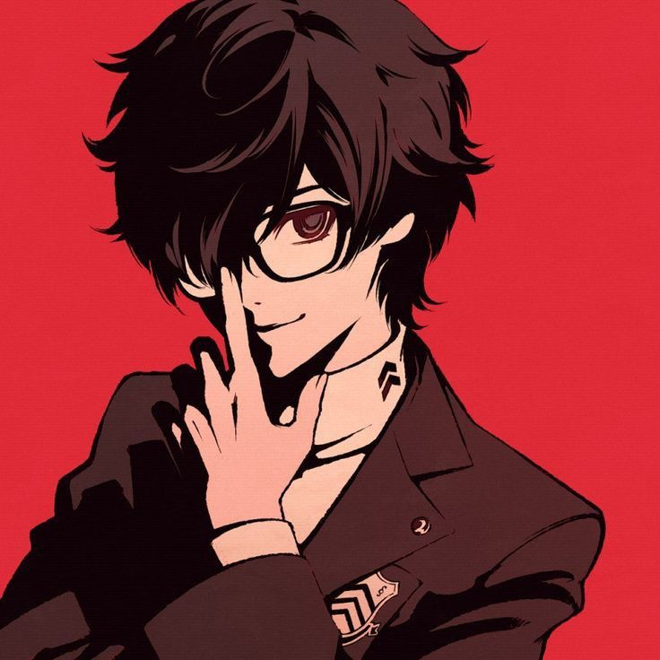
Joker / Ren Amamiya (Protagonista)
O líder destemido dos Ladrões Fantasmas. No mundo real, aparenta ser um estudante quieto de óculos; no Metaverso, assume uma postura ágil e rebelde de casaco longo. Usuário da Wild Card, sua Persona inicial é Arsène.

Mona / Morgana
Uma criatura misteriosa parecida com um gato preto encontrada presa no primeiro Palácio. Guia os ladrões com suas regras e ensinamentos sobre o Metaverso e jura de pé junto que já foi um humano. Sua Persona é Zorro.
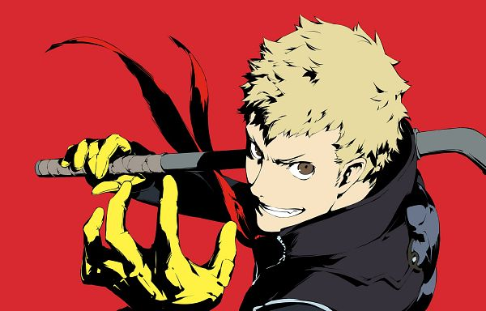
Skull / Ryuji Sakamoto
O ex-atleta de corrida da escola que teve sua carreira arruinada pelo técnico abusivo Kamoshida. É boca-suja, impulsivo e tem um forte senso de justiça contra adultos opressores. Sua Persona é o pirata Captain Kidd.
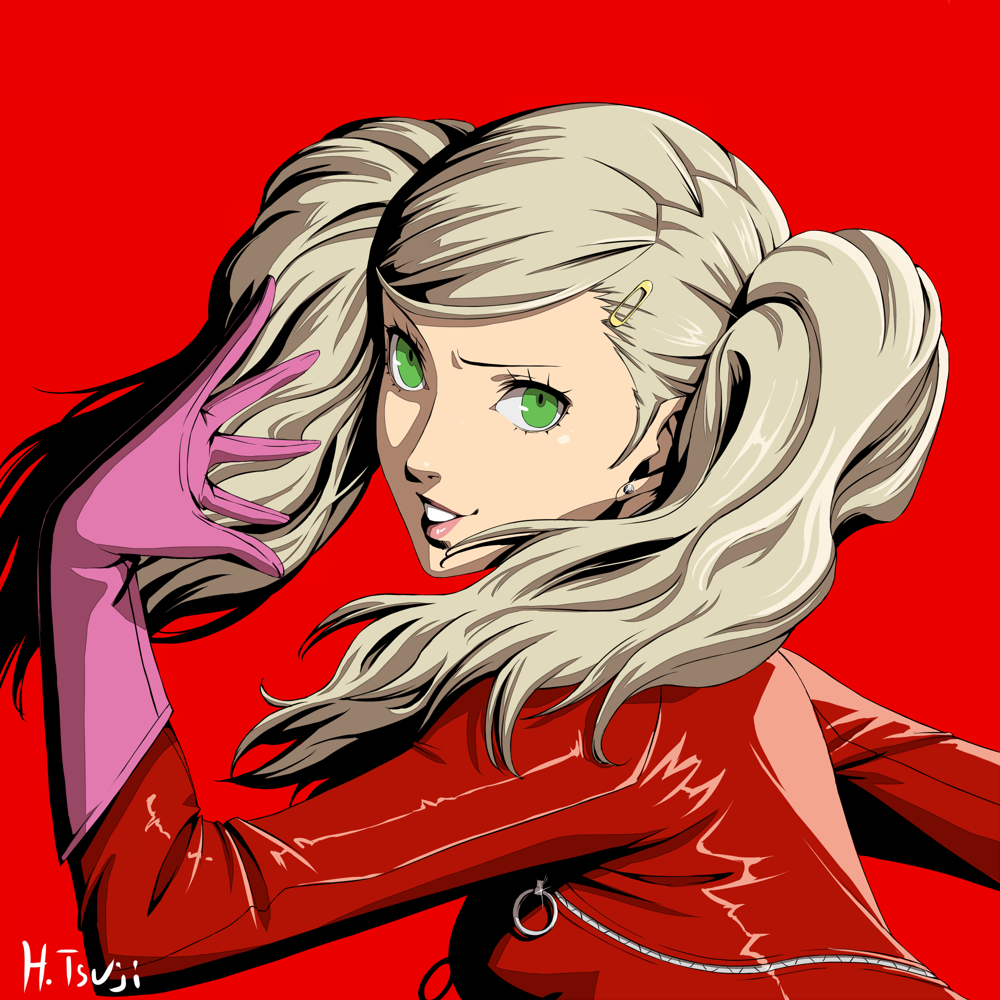
Panther / Ann Takamaki
Uma garota de ascendência americana que trabalha como modelo fotográfica de meio período. Isolada pelos colegas por sua aparência, desperta seu poder para vingar e proteger sua melhor amiga de abusos escolares. Sua Persona é Carmen.
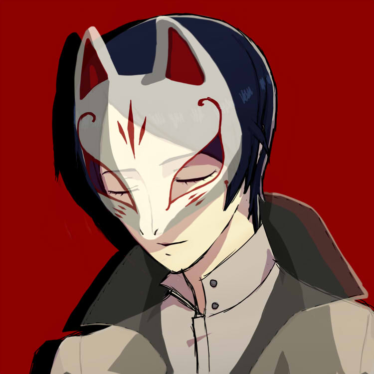
Fox / Yusuke Kitagawa
Um estudante de artes plásticas incrivelmente talentoso, mas excêntrico e que vive sem dinheiro por gastar tudo em materiais. Desperta sua rebeldia ao descobrir que seu mentor roubava as obras de seus alunos. Sua Persona é Goemon.
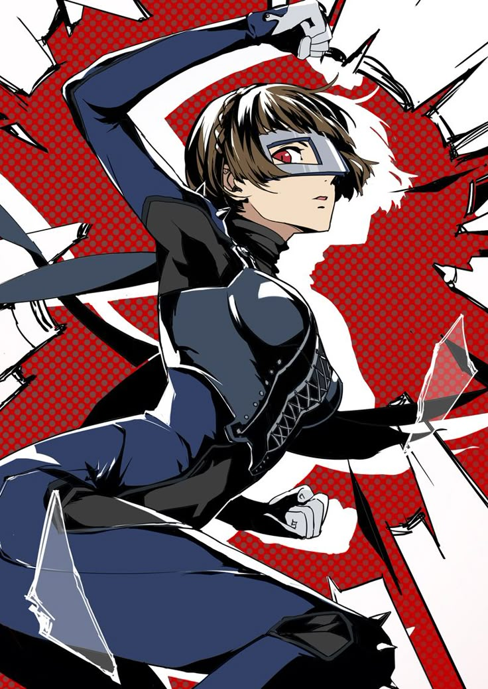
Queen / Makoto Niijima
A exemplar presidente do conselho estudantil e irmã mais nova da promotora de justiça Sae Niijima. Cansada de ser tratada como um fantoche inútil pelos adultos, assume o papel de mente tática do grupo. Sua Persona motoqueira é Johanna.
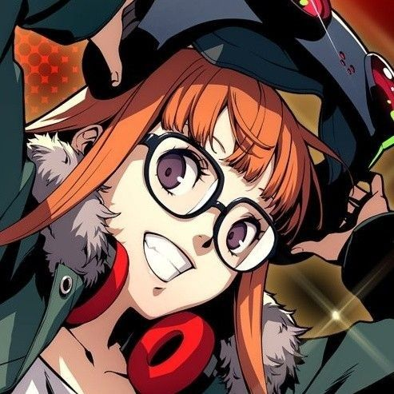
Oracle / Futaba Sakura
Uma genial hacker reclusa (hikikomori) que sofre com traumas severos e culpa infundada pela morte de sua mãe. Os Ladrões invadem seu próprio Palácio mental para salvá-la, transformando-a na navegadora tática da equipe. Sua Persona é Necronomicon.
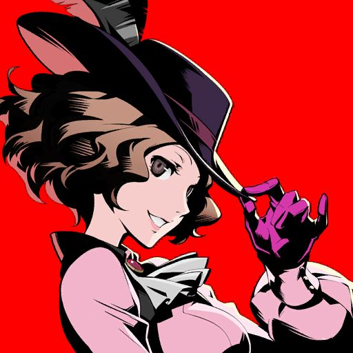
Noir / Haru Okumura
A doce e elegante filha do bilionário dono da rede de fast-food Okumura Foods. Apesar de sua aparência meiga e paixão por jardinagem, usa machados pesados e luta contra o casamento forçado planejado por seu ganancioso pai. Sua Persona é Milady.
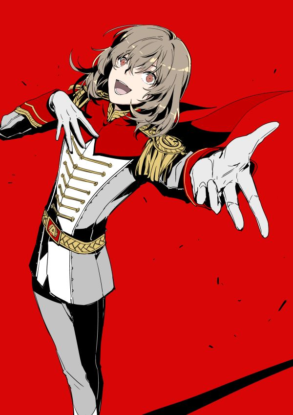
Crow / Goro Akechi
O jovem e carismático detetive celebridade conhecido como o "Príncipe Detetive". Ele bate de frente ideologicamente contra os Phantom Thieves na mídia, mas junta-se temporariamente ao bando por um objetivo em comum. Sua Persona é Robin Hood.

Violet / Kasumi Yoshizawa
Uma talentosa ginasta rítmica caloura que cria um forte vínculo com Joker no mundo real. Exclusiva da versão Royal, seu despertar esconde revelações profundas sobre identidade e luto. Sua Persona elegante é Cendrillon.
Guia de Plataformas & Mídias Expandidas
PlayStation 3 / PlayStation 4 (2016)
O monumental lançamento original. Consagrou a franquia internacionalmente com sua trilha sonora de Jazz ácido cantada por Lyn Inaizumi e um design de menus revolucionário.
Multiplataforma (Royal - 2019)
A versão definitiva absoluta. Adicionou o aclamado arco do "Terceiro Semestre", os personagens Kasumi Yoshizawa e Takuto Maruki, novos locais de Tóquio (Kichijoji), mecânicas de gancho de escalada e um novo final emocionante.
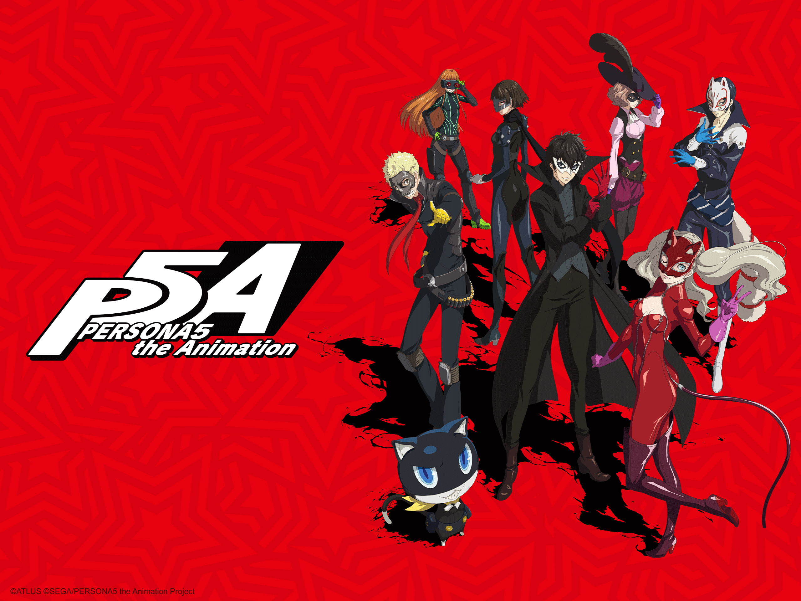
Persona 5: The Animation (Anime)
Série em anime oficial produzida pela CloverWorks adaptando a história principal do jogo em 26 episódios, além de episódios especiais focados em fechar as pontas do arco final dos Ladrões.
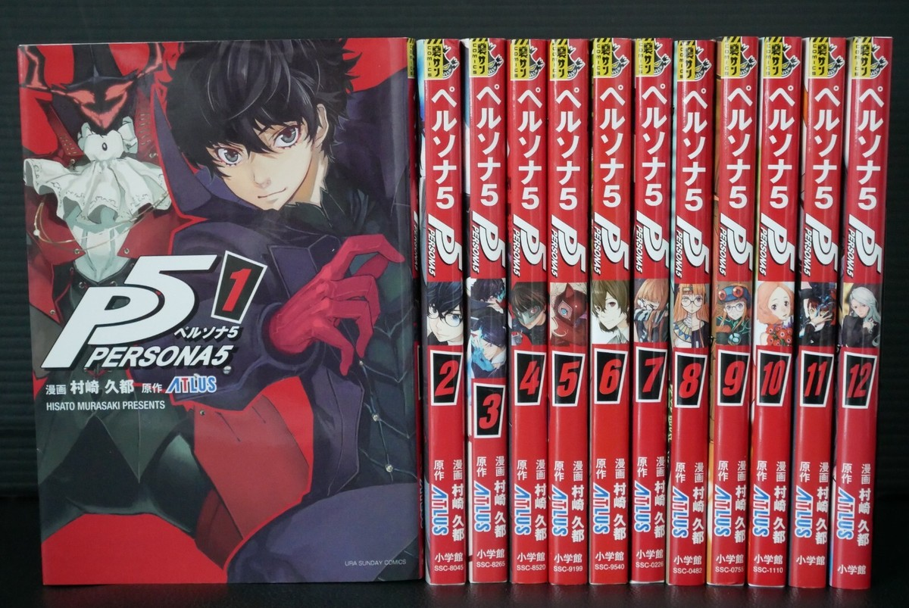
Mangás (Adaptação & Mementos Mission)
P5 conta com o mangá oficial serializado por Hisato Murasaki e também o aclamado spin-off em quadrinhos Persona 5: Mementos Mission de Rokuro Saito, focado em histórias secundárias divertidas da equipe de investigação.
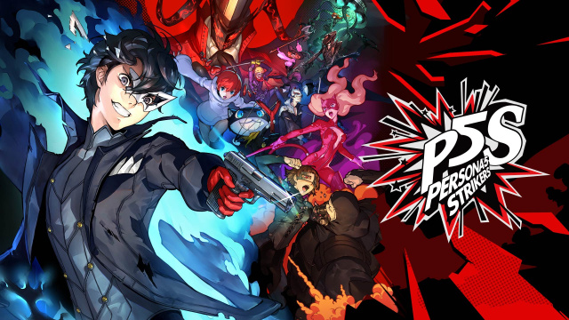
Persona 5 Strikers (Sequência Action-RPG)
A continuação direta da história original feita em parceria com a Omega Force. Mistura o combate tático de Persona com o ritmo alucinante do estilo Musou/Action, levando o grupo em uma viagem de férias por várias cidades do Japão.
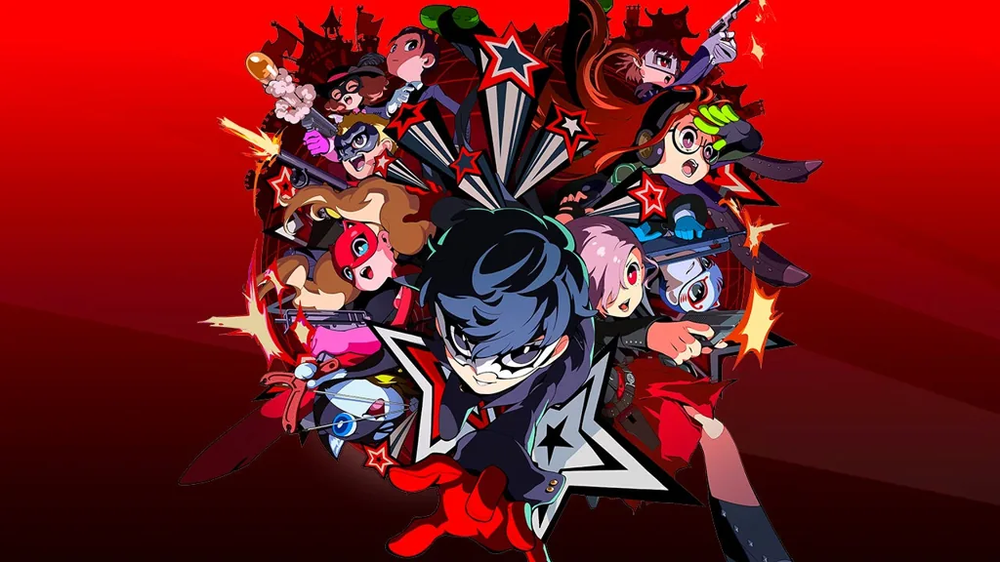
Outros Derivados (Tactica / Dancing)
O universo expandido fecha com o fofíssimo RPG tático de estratégia em turnos Persona 5 Tactica (2023) e o jogo de ritmo nas pistas de dança Persona 5: Dancing in Starlight (2018).